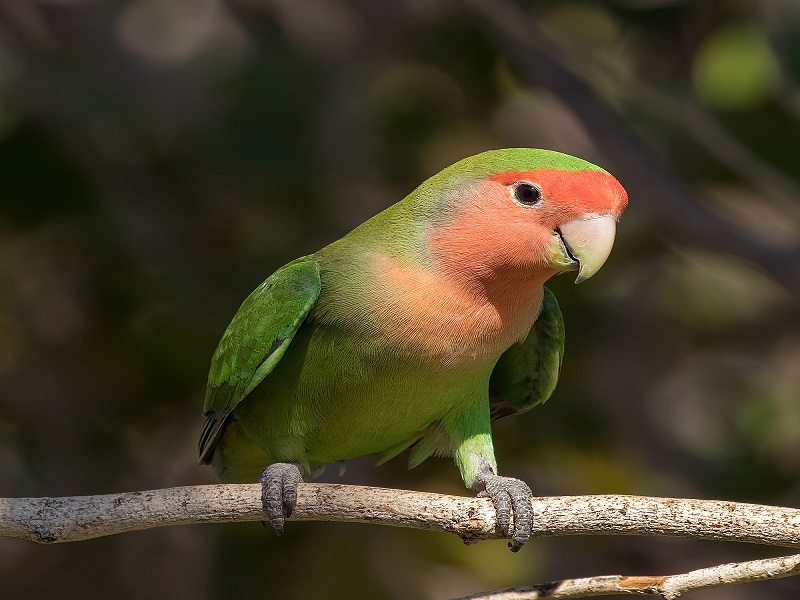

طوطي برزيلي و يا lovebird
اين پرنده ها طوطي هاي کوچکي هستند که ارزش توجه کردن دارند. براي پرورش آنها نيازي به قفس هاي بزرگ نمي باشد. طوطي برزيلي به طور معمول چهار تا شش تخم مي گذارند ، که آنها به مدت 21 روز جوجه کشي مي کنند. جوجه ها معمولاً طي هشت هفته بزرگ و از والدين خود جدا ميشوند. بهترين رژيم براي طوطي برزيلي ، ترکيبي از دانه و غلات به علاوه سبزيجات تازه ، سبزيجات با برگهاي تيره و ميوه تازه مي باشد. "اگرچه نام lovebird نشان مي دهد که آنها بايد به صورت جفت نگه داشته شوند ، اما اگر قصد داريد با او ارتباط عميقي داشته باشيد بايد به صورت تنهايي از آنها محافظت نماييد و هر روز وقت زيادي با آنها صرف کنيد. اين پرنده ها نياز به محبت و توجه دارند و اگر مورد بي توجهي و بي محلي قرار گيرند، افسرده ميشوند. در زمان افسردگي به نشانه اعتراض حتي از غذا خوردن دست مي کشند و شروع به کندن پرهاي خود مي نمايند. لذا اگر نمي توانيد وقت زيادي براي آنها صرف کنيدف حتما به صورت جفت اين پرنده ها را پرورش دهيد. يکي از اشکالاتي که در مورد طوطي برزيلي وجود دارد ، به خصوص اگر تعدادي از آنها را داشته باشيد ، پچ پچ کردن مداوم آنهاست. اين پرندگان بامزه ، مرتباً ميان خودشان صحبت مي کنند و هرزگاهي نيز ممکن است با يکديگر دعوا نموده و جيغ بکشند.
طوطی برزیلی از نژادهای کوچک طوطی به شمار میرود که البته نگهداری از آن به عنوان حیوان خانگیطوطی برزیلی 9 نژاد مختلف دارد که همگی به طبقه آگاپورنیس (Agapornis) تعلق دارند، گرچه تنها چند نژاد خاص به عنوان حیوان خانگی نگهداری میشوند که عبارتند از: طوطی برزیلی صورت هلویی (Peach-faced)، نقابدار (Masked) و فیشر (Fischer). طوطی برزیلی به خاطر پیوند عاطفی عمیقی که با جفت خود برقرار میکند به این نام (Lovebird) خوانده میشود. اندازه این پرنده از حدود 12.5 تا 16.5 سانتیمتر متغیر است، که باعث شده جزء کوچکترین نژادهای طوطی قرار گیرند. طوطی برزیلی، بر خلاف مرغ عشقها (Budgerigar) که دمهای بلند دارند، از یک دم کوتاه و پهن برخوردار است و همچنین جثه عریضتری دارد.
نژاد طوطی برزیلی به گونههای دارای حلقه سفید دور چشم – نقابدار یا یقه زرد (A. personatus)، فیشر (A. fischeri)، گونه سیاه (A. nigrigenis)، نیاسا یا لیلیان (A. lilianae) و گونه های فاقد حلقه دور چشم – صورتهلویی یا صورت صورتی (A. roseicollis)، بالسیاه یا آبیسینیان (A. pullarius)، کلهقرمز یا صورت قرمز (A. pullarius)، ماداگاسکار یا کله خاکستری (A. canus) و یقه سیاه یا سوئیندرن (A. swindernianus)
خرید طوطی برزیلی (کوتوله)
این پرنده در اکثر فروشگاههای حیوانات خانگی به فروش میرسد؛ همچنین میتوانید از پرورشدهندگان معتبر خرید کنید. هزینه خرید یا پذیرفتن یک طوطی برزیلی متغیر است. جایی که از آن خرید میکنید، منطقه جغرافیایی، نادر بودن نژاد و دستی بودن پرنده از جمله عواملی هستند که بر قیمت خرید آن تأثیر میگذارند. با اینکه قیمتها متفاوت است، طوطی کوتوله (برزیلی) معمولا هزینه کمتری نسبت به طوطیهای بزرگ و کمیاب دارد. یک جستجوی اینترنتی تصادفی نشان میدهد که قیمت طوطی برزیلی حدودا از 200 تا 500 هزار تومان متغیر است
بازگشت به صفحه اصلی